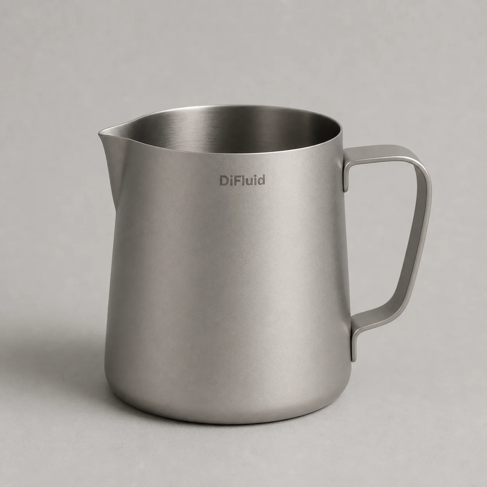

DiFluid · Brand / Vision / ExperienceA living perspective 持续演进的品牌视角
Coffee,
understood.
Our promise 品牌承诺
01 / 02A little more understanding.
In every interaction.
每一次接触，都多理解一点咖啡。
Every product, data point, and interaction should help users understand coffee a little better.
每一次产品使用、数据呈现和品牌沟通，都应该帮助用户多理解一点咖啡。
Observe 观察Compare 比较Understand 理解Learn 积累
One idea at a time.一章，讲明白一件事。
Seven chapters. One point of view.
七个章节，同一个品牌立场。
02 / FoundationUnderstanding
comes first.从理解出发，建立品牌。 03 / Visual identityDepth is the field.
Sense is the signal.以深度容纳，以感知聚焦。
into a next step.从一个线索，到下一步行动。 06 / Long viewBuild. Learn.
Keep understanding.交付，学习，持续理解。 07 / ResourcesA shared source
for what comes next.为下一次创作，准备共同起点。
comes first.从理解出发，建立品牌。 03 / Visual identityDepth is the field.
Sense is the signal.以深度容纳，以感知聚焦。

04 / ApplicationsOne identity.
Many encounters.同一品牌，多种相遇。
05 / ExperienceTurn a signalMany encounters.同一品牌，多种相遇。
into a next step.从一个线索，到下一步行动。 06 / Long viewBuild. Learn.
Keep understanding.交付，学习，持续理解。 07 / ResourcesA shared source
for what comes next.为下一次创作，准备共同起点。